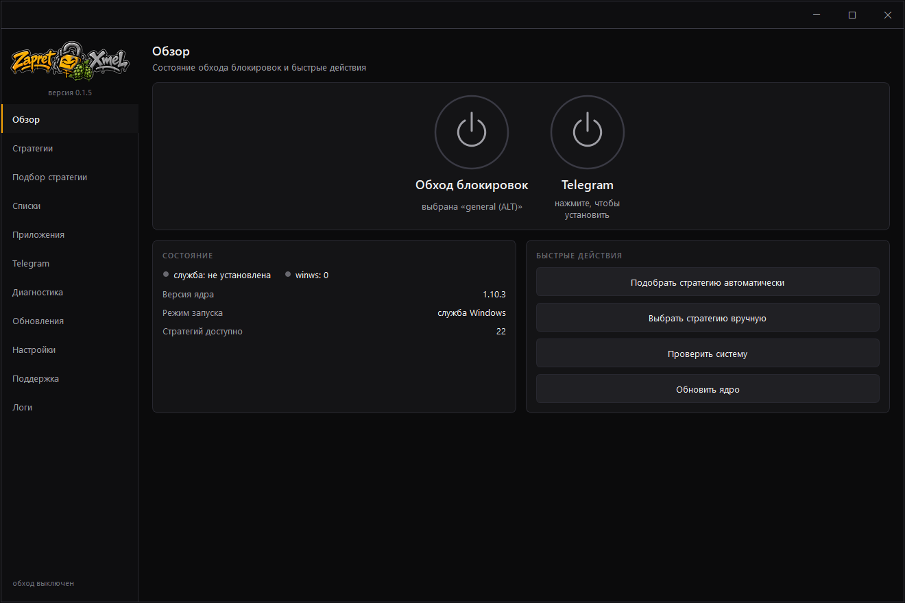
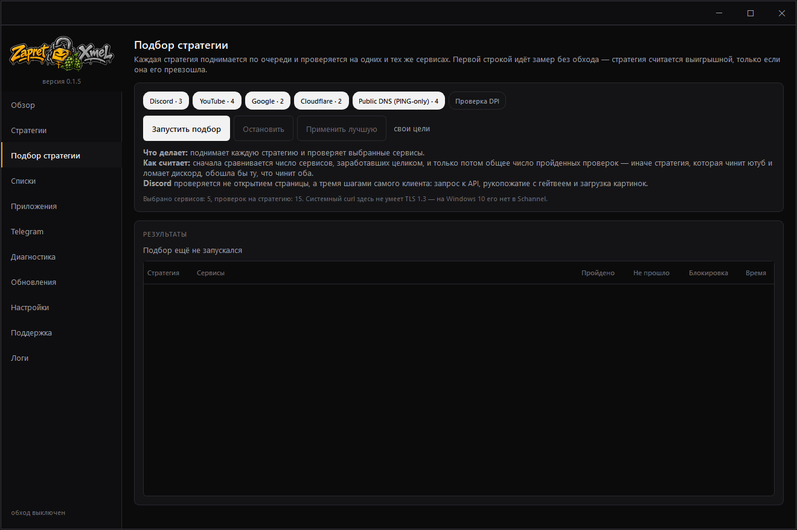
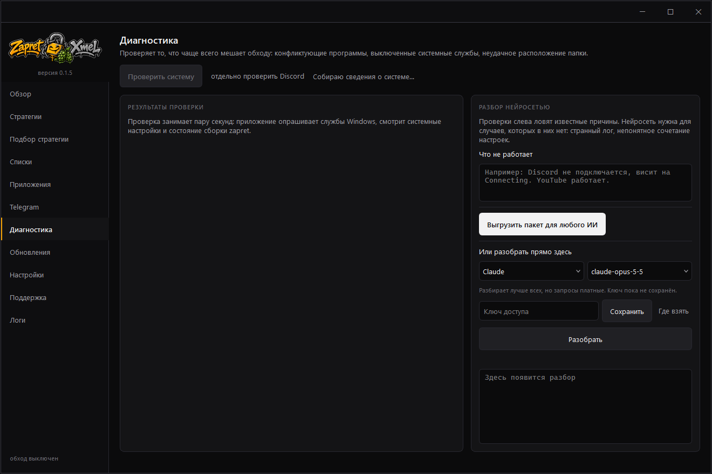
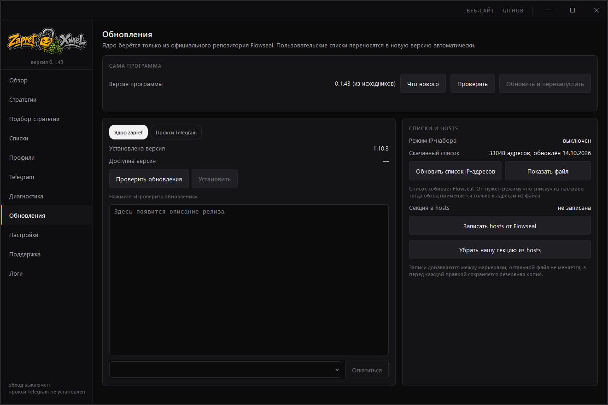

Профили приложений
Пропустить через обход отдельную игру или клиент: программа записывает, куда он ходит, и строит из этого фильтр. Профиль поднимается вместе с приложением, и работать их может несколько сразу.
Одно окно вместо батников и консольных меню: обход блокировок, прокси для Telegram и подбор стратегии перебором. Чужие инструменты программа ставит и обновляет сама — разбираться с ними отдельно не нужно.

01 Включение
Обход поднимается службой Windows или обычным процессом. Служба стартует вместе с системой: до входа в учётную запись и без запущенного окна. Рядом — кнопка Telegram: его чинят не стратегии, а отдельный локальный прокси tg-ws-proxy, и программа ставит его сама.

02 Подбор
Программа поднимает каждую стратегию по очереди и проверяет на одних и тех же сервисах: YouTube, Discord и всё, что вы добавите сами.
Победителем считается только та стратегия, что превзошла замер без обхода.
Перебор всегда начинается с замера без обхода. У многих провайдеров проверяемые адреса открываются и так — без точки отсчёта «лучшей» оказалась бы стратегия, которая просто ничего не сломала. Счёт идёт по сервисам, а не общей суммой проверок, и если победитель что-то так и не починил, об этом сказано прямо.
Включённый VPN обесценивает любую проверку — через туннель открывается всё подряд. Программа замечает туннель и не запускает подбор без согласия.

03 Когда не работает
Полсотни проверок системы: выключенные службы, конфликтующие программы, неудачное расположение папки, чужая установка zapret. У каждой находки — объяснение на русском, а у части ещё и кнопка «починить».
Нейросеть подключается по желанию и только дополняет правила. Из снимка вычищаются имя пользователя и публичные адреса, а сам снимок можно просто выгрузить файлом и отнести в любой чат-бот.

04 Дальше
Ядро берётся из официальных релизов Flowseal — с бэкапом и откатом, а ваши списки доменов переносятся в новую версию сами. Прокси и сама программа обновляются там же. Всё скачанное сверяется с хешем, который GitHub публикует рядом с файлом.
Пропустить через обход отдельную игру или клиент: программа записывает, куда он ходит, и строит из этого фильтр. Профиль поднимается вместе с приложением, и работать их может несколько сразу.
Проверка по уровням — DNS, адрес, имя сайта, ответ сервера. Отвечает на главный вопрос: поможет ли здесь обход вообще. При подмене DNS не поможет никакая стратегия, а обрыв на имени сайта — это ровно его работа.
Готовый .bat можно добавить, а любую стратегию — скопировать
под своим именем и править. Обновление ядра их не затирает.
Свои домены для обхода и свои адреса для проверок — они переживают обновление сборки.
Программа следит за релизами Flowseal и сообщает, если в сборке появилось то, чего интерфейс ещё не умеет.
Оформление берётся из Windows, но переключается и вручную — сразу, без перезапуска. Масштаб тоже свой: на ноутбуке окно не обязано быть во весь экран.
ZapretXmel.exe.Ядро zapret внутрь не вшито: при первом запуске оно скачивается из официальных релизов Flowseal, поэтому у вас всегда свежая сборка, а не та, что была актуальна на момент нашей.
Только из официальных источников
Источников два, и других нет: эта страница и страница релизов на GitHub. Программа просит права администратора и загружает драйвер в ядро Windows — в перезаливе с файлопомойки или из чужого телеграм-канала можно спрятать что угодно.
Скачанное можно проверить: рядом с ZapretXmel.exe в релизе
лежит файл с его хешем, а certutil -hashfile ZapretXmel.exe
SHA256 покажет хеш того, что скачалось.
ZapretXmel — это окно для программы zapret, которая обходит замедление и блокировки сайтов на уровне провайдера: YouTube, Discord и им подобные. Сам zapret управляется консолью и батниками, а здесь есть кнопка «включить», подбор подходящей стратегии, прокси для Telegram и проверка, на каком уровне рвётся соединение.
Программа бесплатная, исходники открыты. Ядро zapret она не содержит: скачивает его из официальных релизов Flowseal при первом запуске.
Нет, это не VPN. ZapretXmel не прячет ваш адрес, не меняет страну и не шифрует трафик. Он решает одну задачу: мешает провайдеру резать или замедлять соединение, которое тот опознаёт по имени сайта. Именно так замедляют YouTube и Discord.
От чего зависит, заработает ли конкретный сервис:
Если нужны оба — и YouTube, и ChatGPT, — придётся совмещать обход с VPN, а они конфликтуют: см. следующий вопрос.
Самая частая причина — одновременно включён VPN или другая программа, влияющая на сеть. Обход работает с пакетами на уровне системы и плохо дружит с чужими перехватчиками трафика: когда всё идёт через туннель, он этот трафик просто не видит. Программа замечает это сама и пишет на главном экране «Трафик идёт через…».
Что проверить по порядку:
Так выглядит, когда .exe останавливают, не показав ни ошибки, ни окна. Чаще всего виноват антивирус, реже — метка «скачано из интернета». Причину можно найти за пару минут.
data/logs, в ней app.log. Нет файла или он старый — программа не дошла до собственного кода: её остановили раньше. Есть свежий — последние строки скажут, что случилось (приложите их к задаче).ZapretXmel.exe → «Свойства» → внизу «Разблокировать» → «ОК». Если такой галочки нет, файл не помечен.ZapretXmel.exe. Программа одним файлом при запуске распаковывает себя во временную папку, и сторонние антивирусы проверяют именно её — поэтому блокировка бывает до появления окна.ZapretXmel.exe.sha256). Это помогает не только вам: после разбора программа перестаёт ругаться у всех.Отдельно: сборка пока не подписана сертификатом, поэтому Windows может показывать предупреждение SmartScreen («Windows защитила ваш компьютер»). «Подробнее» → «Выполнить в любом случае».